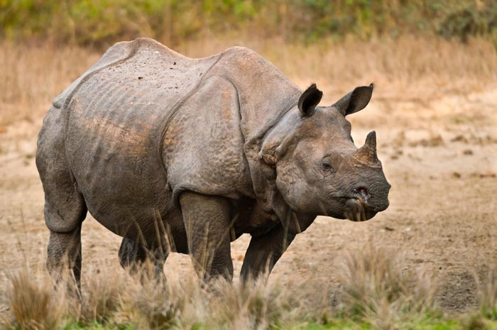

One Horn Rhino
The Greater One-Horned Rhinoceros, a symbol of Nepal's rich biodiversity, has rebounded from near extinction through dedicated conservation efforts, offering hope for wildlife preservation.